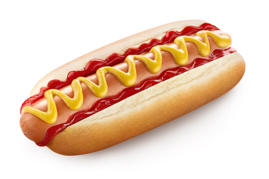

Healthy Hotdogs

Description
Enjoy a guilt-free indulgence with our Healthy Hotdogs recipe.
These light and flavorful hotdogs are made with lean meats,
whole-grain buns, and topped with a rainbow of crisp, fresh veggies.
A nutritious twist on a classic favorite that doesn't compromise on
taste.
Ingredients:
- Lean chicken or turkey sausages
- Whole-grain hotdog buns
- Assorted fresh vegetables (e.g., bell peppers, onions, tomatoes)
- Dijon mustard or low-fat mayonnaise
- Pickle relish for added flavor
Directions
- Grill or cook lean sausages until fully cooked.
- Toast whole-grain buns on the grill or in the oven.
- Place sausages in buns; top with fresh veggies.
- Add a dollop of Dijon mustard or low-fat mayo.
- Sprinkle with pickle relish for extra flavor.